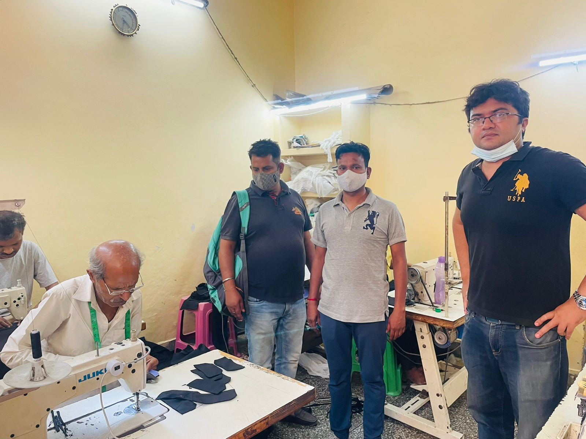
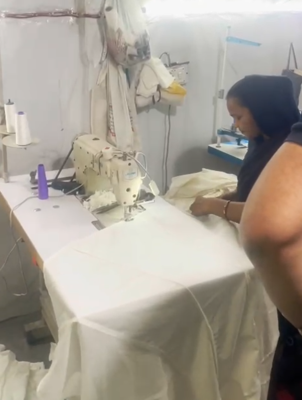
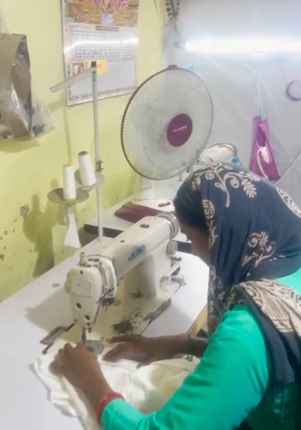

05 APR 2022
COMPANY ONE LINER:
We are Styched, a global D2C brand, and we make fashion affordable by creating new and evolving styles every week at a quarter of the price compared to any other brand owing to our patented Production On Demand tech and Zero inventory Zero warehouse modelEXEC SUMMARY/TL:DR
● Our B2B vertical, SenseEnable Fashions, is now registered. This will play a major role in expanding our tailor network, last mile delivery chain, strategic projects, etc.● We closed March at 1.7 Cr revenue with an exit MRR of ~2Cr.
● Delhi Hub has picked up very fast with more than 200 Tailors in the pipeline. We are now planning our Mumbai Hub
THANK YOUS
● We thank Mr. Vikas Jain (Micromax) for his guidance on Brand Marketing and on moving Holding company from India to Singapore.● We thank Mr. Kamal Behl for introducing us to strategic partners on Production Efficiency.
ACHIEVEMENTS/LESSONS LEARNED
● We clocked our highest gross revenue in March with 1.7 Cr. We were also able to maintain our CAC. We are targeting 2.2 Cr INR for April.● We spent a week in Delhi for our Hub growth. It was very encouraging to see the enthusiasm among micro hubs and family owned home business owners towards increasing their work with the Styched Tailoring App.



CHALLENGES
● We are switching our delivery partners at a zone level. A small disruption in Shipping is ongoing. The process is almost complete. We should hit back to normalcy by next Monday.● Resellers Resurface! - A new set of resellers have come to our notice who have been buying in bulk from us and reselling at a higher price point. Our team is in touch with them to find a resolution.
HELP NEEDED
● Any reference for office real estate or realtor in Bangalore would be highly appreciated. We plan to move our Bangalore hub to a more spacious location.● Introductions to Banks / Fintech companies for creating Alliances - coupon based. We share our coupons for Banks to gratify their customers for using Credit Cards or Debit Cards. We can do a cross promo as well.
KEY METRICS AND TRACTION
| W1 Input Start Week | W2 | W3 | W4 | W5 | W6 | W7 | W8 | W9 | W10 | W11 | W12 | |||
|---|---|---|---|---|---|---|---|---|---|---|---|---|---|---|
| Revenue KPI: | Sales | Forecast | 38,000.00 | $40,000.00 | $42,000.00 | $45,000.00 | $47,500.00 | $50,000.00 | $52,500.00 | $55,000.00 | $57,500.00 | $60,000.00 | $62,500.00 | $65,000.00 |
| Actual | 31,475.00 | 33,377.00 | 23,839.00 | 29,642.00 | 33,942.00 | 40,691.00 | 36,770.00 | 44,110.00 | 55,558.00 | 55,706.00 | 56,108.00 | 58,195.00 | ||
| WoW Growth | 32% | 6.04% | -28.58% | 24.34% | 14.51% | 19.88% | -9.64% | 19.96% | 25.95% | 0.27% | 0.72% | 3.72% |
CAC – Helps us grow our customer base while staying within the Unit economics of 20%
% Confirmation – Confirmation of COD orders Pre-Production. The ideal % is 85%. Target is to reach 85% consistently by March 2022. 15% Cancelled orders help us keep RTO down and weed out bad orders.